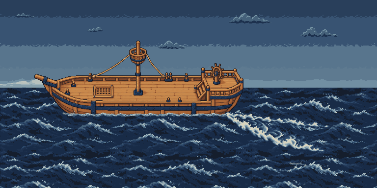
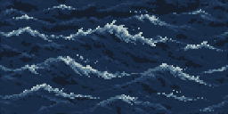
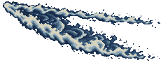
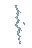
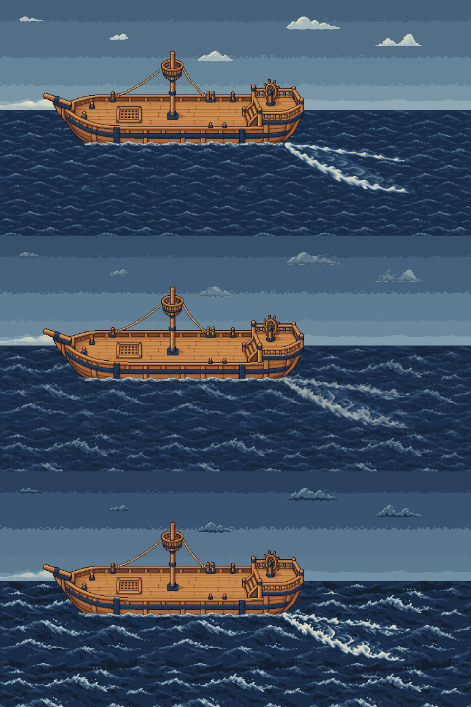
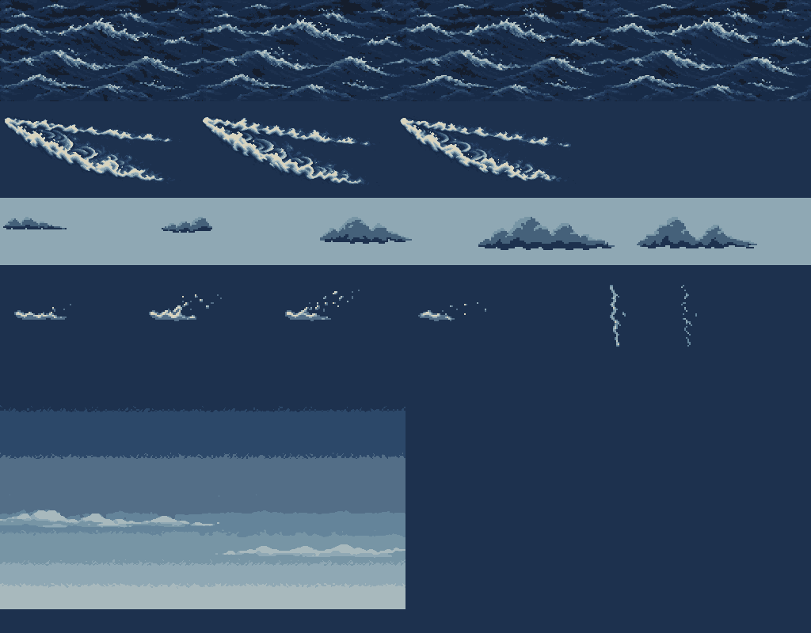
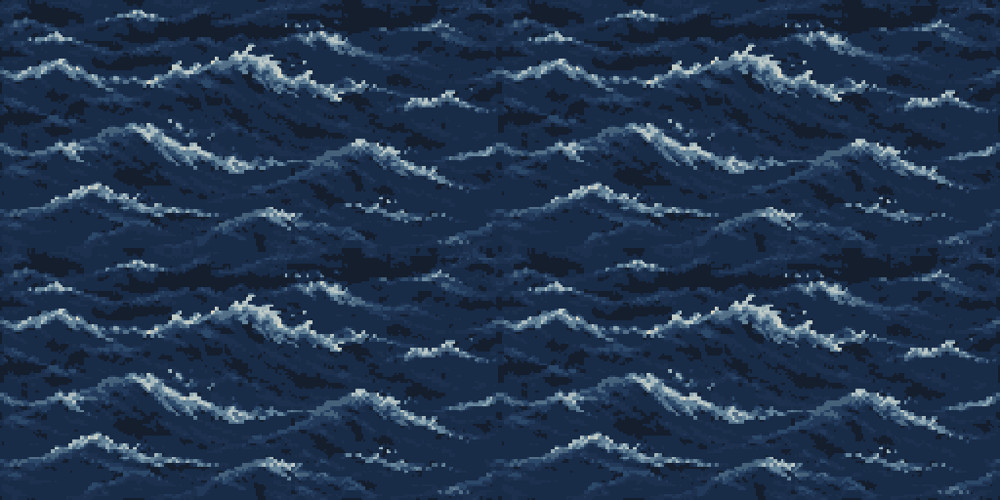

Heavy weather · generated deck assets
Asset review only. Native game frames, shared 64-colour palette. Four sea phases / three wake phases at 240 ms. Sources and previews stay outside shipped art.

Peak weather: 12-step composite covers the full 4×3 sea/wake cycle. Bare Hull C isolates contact fit; this is not the running plugin.

Rough sea · 256×128 × 4 · 960 ms
Heavy wake · 240×96 × 3 · 720 ms
Spindrift · 64×32 × 4 · brief burst then pause
Distant fork · 32×48 × 2 · 200 ms, 18-second gap

Top: calm. Middle: 50% asset blend. Bottom: storm. Fixed review camera; original foam retained.

All runtime poses, nearest-neighbour enlarged sprites.

Sea frame zero repeated 2×2 at 2× scale; seams also checked byte-for-byte for all four phases.